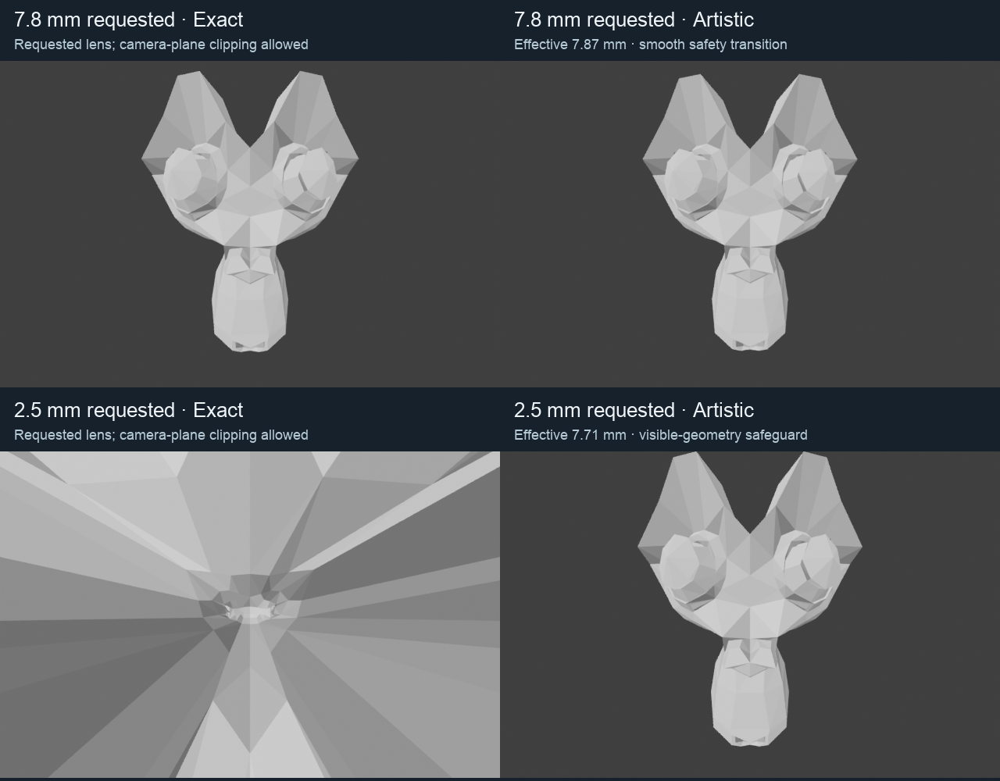

Production Geometry Nodes modes, installed and selectively reloaded in Uraraka. Native and BUI wizard/full controls share the selector. Release version remains 3.5.6; the dirty live scene was not saved.

The affine full-influence map preserves focus-plane framing and signed volume with a fixed camera. No depth division, face reduction, root selection or invalid-domain identity switch. Vertices may cross the camera plane, as requested. At 2.5 mm the calibrated Suzanne fixture has 321 of 507 vertices behind the camera; that clipping is intentional in Exact.
For camera-relative p, forward f, focus depth d, ratio r and z=dot(p,f): q=r*p+(1-r)*(z-d)*f; output=camera+r^(-2/3)*q. Partial masks/falloff do not guarantee volume. Curvature, directional thickness, raycast and shader equivalence are not claimed.
One pre-effect POINT maximum chooses a coherent safe effective lens. A smooth upper envelope handles the transition. Source visibility eligibility fades only outside the original frame/plane, avoiding a hard on/off safety change. Companions reuse focus state and apply a local guard only if needed. Camera/viewport frustum inputs reuse the existing update pass.
The protected 2.5 mm request renders at an effective 7.71 mm on this fixture. It is explicitly approximate, not an exact exterior 2.5 mm view. Rear-depth exaggeration is not implemented. If the frustum is unavailable, a reported camera-plane-only fallback has no side-frame guarantee.
Stock Mac 4.2.23, 4.3.2, 4.4.3, 4.5.15, 5.0.1, 5.1.2 and 5.2.2 pass the production-asset finite geometry, volume, exact neutral, companion and boundary sweeps. Schema15 animated inputs, billboard sockets and edited curve survive migration to internal schema17. All six mode strings cover twelve catalog languages.
Matched 40,962-vertex ordinary-range benchmark: prior schema15 medians 4.29–5.29 ms; Exact 2.41–2.55 ms; short-lens Artistic 2.64–2.97 ms. Two reversed-order blocks, fifty warm samples per case. CPU update + depsgraph + readback, not viewport FPS. Existing update cadence and Windows-specific code are retained.
Live Uraraka readback: Exact, seven visible linked modifiers, finite 12,913-vertex head. Actual Metal orbit/close-zoom motion and physical Windows verification remain open. These comparison images are actual CPU Cycles renders with diagnostic source-facet shading; no material or live-motion acceptance implied.
Runtime matrix · Matched timings · Migration · Defaults and bindings · Render metrics · Installed readback · Overview